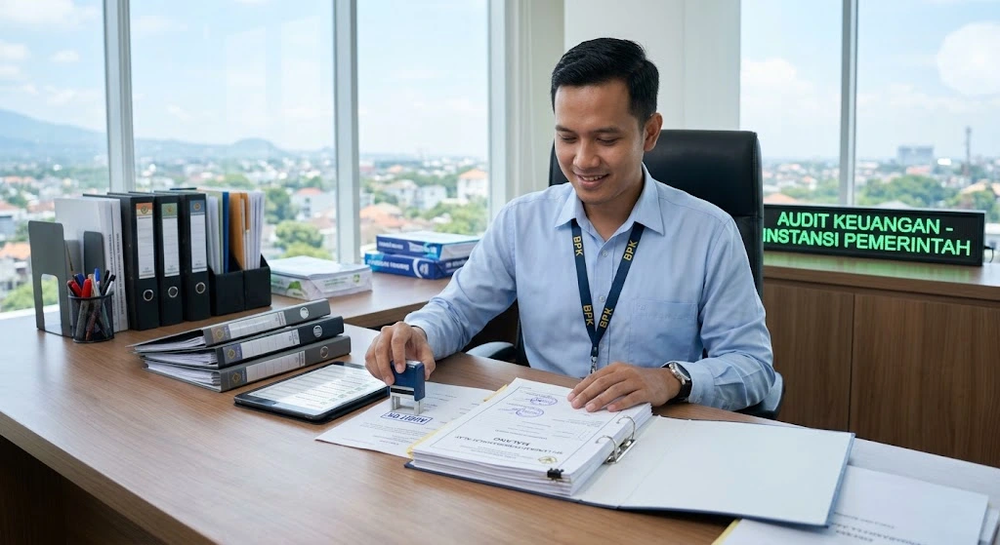

Poin Utama Memilih Vendor Alat Kantor SPJ Lengkap
- Dokumen SPJ lengkap menjadi dasar utama kelancaran audit dan pencairan anggaran.
- Vendor terpercaya menyiapkan kuitansi, faktur, dan berita acara serah terima sejak awal transaksi.
- Memilih vendor lokal Malang memudahkan koordinasi dan penyesuaian format dokumen.
- Kelengkapan dokumen mengurangi risiko temuan saat pemeriksaan keuangan instansi.
- Tim sales kami siap membantu konsultasi kebutuhan pengadaan dan dokumen SPJ.
Mengapa Dokumen SPJ Lengkap Penting saat Memilih Vendor Alat Kantor?
Dokumen SPJ lengkap penting karena menjadi dasar pertanggungjawaban setiap transaksi pengadaan alat kantor, sehingga instansi dapat membuktikan penggunaan anggaran secara sah kepada pihak yang berwenang.
Vendor yang terbiasa menangani pengadaan instansi pemerintah maupun sekolah negeri umumnya sudah memahami format dokumen yang dibutuhkan, sehingga proses pengajuan SPJ dapat berjalan lebih cepat tanpa bolak-balik revisi berkas.

Apa Saja Dokumen yang Disiapkan Vendor untuk Mendukung Audit?
Dokumen yang umumnya disiapkan vendor untuk mendukung audit meliputi kuitansi pembayaran bermaterai resmi, faktur atau nota pembelian, berita acara serah terima barang, serta surat pesanan atau kontrak sesuai nilai transaksi.
Selain dokumen administrasi dasar tersebut, vendor yang berpengalaman biasanya juga menyertakan dokumentasi foto barang yang diterima sebagai bukti tambahan bahwa pengadaan telah dilaksanakan sesuai kesepakatan.
Bagaimana Cara Memastikan Vendor Alat Kantor di Malang Menyediakan SPJ Lengkap?
Memastikan vendor menyediakan SPJ lengkap dapat dilakukan dengan menanyakan sejak awal dokumen apa saja yang akan disertakan dalam setiap transaksi, serta memastikan format dokumen tersebut sesuai dengan prosedur internal instansi Anda.
Bekerja sama dengan vendor yang berpengalaman menangani pengadaan B2B maupun B2G di wilayah Malang Raya juga membantu, karena vendor tersebut umumnya sudah terbiasa menyesuaikan dokumen dengan kebutuhan audit berbagai jenis instansi.
Apa Keuntungan Memilih Vendor Lokal di Malang untuk Pengadaan Alat Kantor?
Memilih vendor lokal di Malang umumnya memberikan waktu pengiriman yang lebih cepat, sehingga kebutuhan alat kantor dapat terpenuhi tepat waktu tanpa harus menunggu proses pengiriman dari luar kota.
Selain kecepatan pengiriman, vendor lokal juga lebih mudah dihubungi untuk koordinasi langsung terkait kelengkapan dokumen SPJ, terutama apabila terdapat kebutuhan penyesuaian format sesuai kebijakan internal instansi.
Kesimpulan
- Pastikan vendor alat kantor menyediakan dokumen SPJ lengkap sejak awal transaksi.
- Siapkan kuitansi, faktur, dan berita acara serah terima sebagai bukti pendukung audit.
- Utamakan vendor lokal Malang untuk kemudahan koordinasi dan pengiriman.
- Konfirmasi format dokumen SPJ sesuai prosedur internal instansi Anda.
- Hubungi tim sales kami via WhatsApp untuk konsultasi pengadaan dan kelengkapan dokumen SPJ.